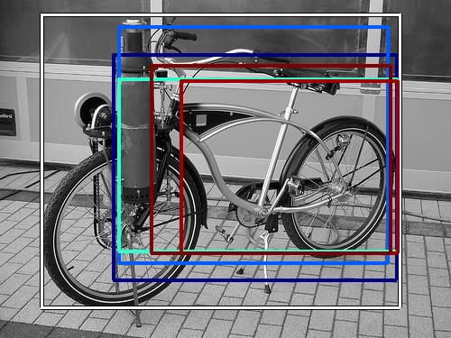
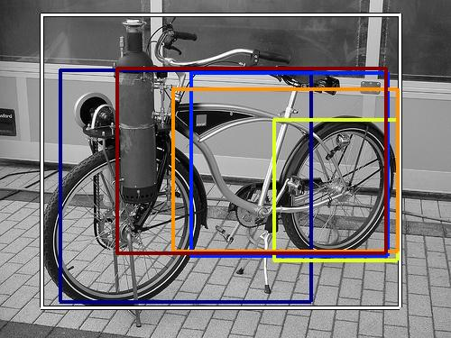

0.498047

0.550004

0.552976

0.578489

0.579864

0.587750

0.602118

0.623683

0.624982

0.625437
| Target image | 0.498047 | 0.550004 | 0.552976 | 0.578489 | 0.579864 | 0.587750 | 0.602118 | 0.623683 | 0.624982 | 0.625437 |
Target image |  14765.482422 |  13627.172852 |  9695.816406 |  8163.294922 |  7815.945312 |  6961.303711 |  6854.987305 |  6392.916504 |  6289.229492 |  5915.561523 |
Target image |  10238.604492 |  7729.789551 |  7115.603516 |  7038.135254 |  7029.899414 |  6626.670410 |  6332.083984 |  6298.312500 |  6089.947754 |  5626.812988 |
| Target image  |  11346.284180 |  10970.896484 |  10697.808594 |  8135.356445 |  8055.143066 |  7280.074707 |  7155.270020 |  6671.653320 |  6552.139648 |  6255.973633 |
| Target image  |  16550.037109 |  12140.888672 |  11158.256836 |  10000.215820 |  8226.916016 |  7649.655762 |  6892.568359 |  6850.283203 |  6266.910156 |  5878.189941 |